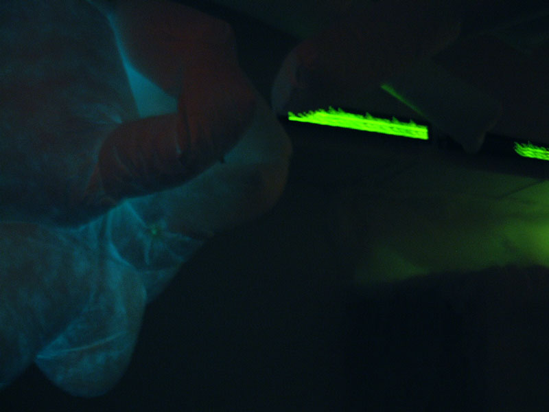
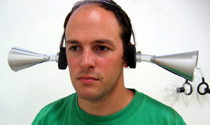

people doing strange things with electricity
The thirty thousandth dorkbot-nyc meeting took place on Wednesday, January 5th, 2005, 7pm at
Location One in SoHo.
It featured the lovely and talented:
 Paul Davies: A New Type of Unfortunate OccurrenceSome images from the meeting are here.
Paul Davies work explores issues of technology in society through interactive sculpture and installations which are often driven by surplus technology that he finds in various local and mail order surplus shops. His art is explicitly about contemporary cultural issues involving the role of media and technology in our society. Paul will present a recent collaboratively built environment called 'A New Type of Unfortunate Occurrence'.
http://www.xraylab.org Michelle Rosenberg: Sound Dispensers
Michelle Rosenberg makes devices to listen through. In an on-going project called "Dynamic Headphones", she make headphones that mediate a listener's relationship to recorded and live sounds. She modifies portable headphones as well as makes ear trumpets. Michelle will talk about her "Dynamic Headphones" and the antique hearing aids that inspired them.
http://www.michellerosenberg.comJason Van Anden: Farklempt! 1.0 - World Premier
Farklempt! is an online multiplayer video game that challenges its players to manage their emotional-health through the skillful management of feelings against other players others trying to do the same. Farklempt! continues Jasons ongoing series of artworks that strive to represent human emotional behavior through art and technology. Farklempt! was commissioned by Rhizome.org with the support of the Jerome Foundation, The Greenwall Foundation, and The Warhol Foundation. The fun doesn't stop at Dorkbot! After the meeting, you can go home and play Farklempt! to your heart's delight.
http://www.smileproject.com